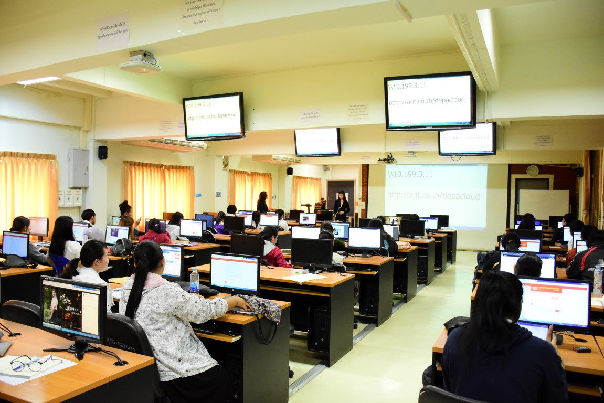

ศูนย์วิจัย
กลุ่มวิจัย
1) Advanced GIS Technology (AGT)
To conduct research and provide academic services in the fields of Internet, GIS, Health GIS, and Hydrologic modeling with GIS.• Assist. Prof. Pipat Reungsang, Ph.D., ISU (USA)• Assist. Prof. Chaiyapon Keeratikasikorn, Ph.D., CU (TH)• Nagon Watanakij,
Ph.D., CU (TH)
2)ห้องปฏิบัติการวิจัย เทคโนโลยีการสื่อสารเครือข่ายประยุกต์ (ANT)
 เนื่องจากในปัจจุบันในแต่ละหน่วยงานทั้งในภาครัฐและเอกชนรวมถึงสถาบันการศึกษาทั้งในและต่างประเทศ ต่างมีความต้องการที่จะพัฒนาเครือข่ายและระบบการสื่อสาร ทั้งแบบใช้สายและไร้สายขึ้นมาใช้งานภายในหน่วยงานของตนเอง
รวมถึงนโยบายการพัฒนา เครือข่ายระดับชาติ หน่วยงาน กสทช. เพื่อพัฒนาระบบโทรศัพท์เคลื่อนที่แบบอนาคต 3.XG/4G/5G โดยมีวัตถุประสงค์เพื่อใช้ในการติดต่อสื่อสารให้ได้ระยะทางที่ไกลและครอบคลุมมากยิ่งขึ้น และเพื่อเพิ่มความสะดวก รวดรเร็ว รวมไปถึงความจุของเครือข่ายสื่อสารเพื่อให้สามารถส่งผ่านข้อมูลได้มากขึ้น
เช่น สามารถดูวีดีโอ โทรทัศน์ การประชุมทางไกลด้วยวีดีโอ โดยประยุกต์ใช้ในด้านต่างๆ เช่น การศึกษา การเกษตร อุตสาหกรรม การแพทย์ สถานการณ์ภัยพิบัติ และการทหาร ผ่านระบบเครือข่ายความเร็วสูงได้ หรือแม้แต่การแลกเปลี่ยนข้อมูลกันระหว่างองค์กร รวมถึงเครือข่ายสังคมออนไลน์
นอกจากนี้เครือข่ายในปัจจุบันยังมีความเสี่ยงต่อการบุกรุกและโจมตีในรูปแบบต่างๆ ซึ่งในทุกภาคส่วนได้เล็งเห็นถึงความสำคัญของการปกป้อง หรือเพิ่มความปลอดภัยให้กับการทำธุรกรรม หรือการส่งผ่านข้อมูลในด้านต่างๆ รวมไปถึงการรักษาความเป็นส่วนตัวอีกด้วย
การใช้การวิเคราะห์ข้อมูลขนาดใหญ่เองนั้นก็จำเป็นที่จะต้องมีการประยุกต์การประมวลผลที่มีประสิทธิภาพสูง หรือแม้แต่การประมวลผลแบบขนานในรูปแบบต่างๆ รวมถึงการใช้งานบริการคลาวด์ และเวอร์ชัวร์ไรเซชัน ทั้งนี้ระบบ ซอฟต์แวร์ ฮาร์ดแวร์ และองค์ความรู้ต่างๆ
ส่วนใหญ่นั้นอาศัยเทคโนโลยีและผลิตภัณฑ์จากต่างประเทศ ซึ่งมักจะมีราคาสูง รวมไปถึงการที่ไม่มีการเปิดเผยองค์ความรู้ ส่งผลให้ประเทศไทยตกอยู่ในฐานะ ผู้ซื้อ และผู้ใช้ เทคโนโลยี มากกว่าที่จะเป็น ผู้ผลิตและคิดค้นดังนั้นห้องปฏิบัติการวิจัย “มด” หรือ
การสื่อสารเครือข่ายประยุกต์ จึงมีเป้าประสงค์เพื่อตอบโจทย์ข้างต้น
3) ห้องปฏิบัติการการคำนวณแบบฉลาดขั้นสูง (ASC)
This laboratory aims to study and research on the smart technology for high performance computing which imitates the nature-inspired behaviors.
- Assist. Prof. Khamron Sunat, Ph.D., CU (TH)
- Assist. Prof. Sirapat Chiewchanwattana, Ph.D., CU (TH)
- Assist. Prof. Punyaphol Horata, Ph.D., KKU (TH)
- Nunnapus Moungmingsuk, D.Eng., KU (TH)
4) ห้องปฏิบัติการอินเตอร์เฟสระหว่างฮาร์ดแวร์กับมนุษย์และการสื่อสาร (H2 I-Comm)
กลุ่มวิจัย H2I-Comm ให้ความสำคัญกับการบูรณาการความรู้จากหลากหลายสาขาวิชาที่แตกต่างแต่มีความเกี่ยวข้องสัมพันธ์กัน เพื่อให้ได้ผลลัพธ์ที่ครอบคลุมหลายศาสตร์แบบสร้างสรรค์และได้ผลดีมากที่สุด
วัตถุประสงค์ของกลุ่มวิจัย H2I-Comm เพื่อออกแบบ พัฒนา และประเมิน เครื่องมือและเทคโนโลยีที่เป็นนวัตกรรมใหม่ให้สามารถใช้งานได้ง่ายและมีประโยชน์ เป้าหมายของกลุ่มวิจัย H2I-Comm จะเน้นการศึกษา วิจัย สร้างองค์ความรู้ใหม่ที่เกี่ยวกับเทคโนโลยีทางอินเทอร์เน็ต การสื่อสารแบบไร้สาย
การเข้ารหัสและความปลอดภัยของข้อมูล หุ่นยนต์ การประมวลผลทางสัญญาณดิจิทัลที่เกี่ยวกับหุ่นยนต์ การพัฒนาฮาร์ดแวร์ต่างๆ การออกแบบปฏิสัมพันธ์ระหว่างมนุษย์และคอมพิวเตอร์ อินเตอร์เฟสของอุปกรณ์ไร้สาย โซเชียลคอมพิวติ้ง เทคโนโลยีการจูงใจ เทคโนโลยีมัลติมีเดีย
อินเทอร์เน็ตในทุกสิ่ง ระบบการประมวลผลที่มีอยู่ทุกหนทุกแห่ง หรือการนำคอมพิวเตอร์เข้ามาเป็นส่วนหนึ่งของการดำรงชีวิต รวมไปถึงระบบสารสนเทศทางสุขภาพที่ประยุกต์ใช้เทคโนโลยีไร้สายและอินเทอร์เน็ต
5) ห้องปฏิบัติการ โลจิสติกส์และซัพพลายเชน (LSCL)
โลจิสติกส์และห่วงโซ่อุปทานเป็นตัวขับเคลื่อนภาคอุตสาหกรรมให้สามารถดำเนินงาน และเป็นรากฐานในการสร้างรายได้ให้กับประเทศ ปัจจุบัน ในการบริหารโลจิสติกส์และห่วงโซ่อุปทานสมัยใหม่ ซึ่งเทคโนโลยีมีก้าวหน้า ประกอบกับการแข่งขันที่สูงขึ้น ทำให้ต้องภาคอุตสาหกรรมต้องการเทคโนโลยีที่ตอบสนองความรวดเร็ว
ถูกต้องแม่นยำ อัตโนมัติ ลดต้นทุนแรงงาน และทำงานร่วมกันระหว่างองค์กรได้ การเสริมประสิทธิภาพให้โลจิสติกส์และห่วงโซ่อุปทานสามารถขับเคลื่อนได้อย่างมีประสิทธิภาพ จึงเป็นการเพิ่มความสามารถในการบริหารจัดการ สร้างโอกาสในการแข่งขัน เปิดตลาดใหม่
และเป็นโอกาสให้สินค้าของประเทศไทยกระจายไปยังแหล่งต่างๆ ได้ทั่วโลกเพื่อตอบสนองความต้องการของภาคอุตสาหกรรม กลุ่มงานวิจัยนี้ จึงมีวัตถุประสงค์เพื่อศึกษาและคิดค้นนวัตกรรมเชิงซอฟท์แวร์ที่สนับสนุนต่อการดำเนินการในโลจิสติกส์และห่วงโซ่อุปทาน โดยเน้นการศึกษาวิจัย
(แต่ไม่จำกัด) ในหัวข้อใหญ่ๆ ดังต่อไปนี้
1.Logistic and Supply Chain Information Exchange & Integration โลจิสติกส์และห่วงโซ่อุปทาน ประกอบขึ้นมาจากการดำเนินธุรกิจร่วมกันของหลายองค์กรย่อย ซึ่งในแต่ละหน่วยงานมีกระบวนการ (process) และโครงสร้างภายใน (infrastructure) ที่แตกต่างกัน ในสมัยก่อน การแลกเปลี่ยนข้อมูลสามารถทำได้หลายรูปแบบ
เช่น จดหมาย โทรศัพท์ อีเมล์ แต่เนื่องจาก โครงสร้างระบบงาน (system architecture and platform) ที่มีความหลากหลาย ทำให้ยากต่อการแลกเปลี่ยนและบูรณาการข้อมูลเพื่อใช้งานร่วมกันได้ สถาปัตยกรรม SOA (Service Oriented Architecture) เป็นเทคโนโลยีที่ช่วยให้ระบบที่ต่าง
platform สามารถทำงานร่วมกันได้โดยใช้ web services และ XML (extensible markup language) เป็นเครื่องมือในการสื่อสาร แต่ถึงอย่างไร XML ก็ต้องมี data structure ที่เป็นมาตรฐาน ทั้ง vocabulary และ schema เพื่อให้สามารถสื่อสารได้อย่างเข้าใจ ทั้งในระดับ
human และ application จึงเกิดหน่วยงานที่กำหนดมาตรฐาน vocabulary และ schema สำหรับ XML ที่ใช้ในการแลกเปลี่ยนในหลากหลายธุรกิจ เช่น GS1 XML Standard, RosettaNet สำหรับโลจิสติกส์และห่วงโซ่อุปทาน หรือ OTA (Open Travel Alliance) สำหรับธุรกิจการท่องเที่ยว
หรือ HL7 (Health Level Seven) สำหรับกลุ่มวิทยาศาสตร์สุขภาพ เป็นต้น
2.RFID (Radio Frequency Identification) RFID เป็นเทคโนโลยีระบุตัวตนอัตโนมัติด้วยคลื่นวิทยุ ที่ช่วยให้การทำงานรวดเร็วขึ้น ลดการใช้แรงงานมนุษย์ และลด process ปัจจุบัน ภาคอุตสาหกรรมให้ความสำคัญในการนำ RFID เข้ามาบริหารกระบวนการมากขึ้น แต่ปัญหาคือ RFID มีต้นทุนสูง
ใช้เวลาศึกษาและ implement นาน และยากต่อการคำนวณ ROI (Return on Investment) แต่อย่างไรก็ตาม แนวโน้มการใช้งานและการศึกษาวิจัยด้าน RFID มีมากขึ้น เนื่องจาก RFID มีราคาถูกลง และมีประสิทธิภาพมากขึ้นเรื่อยๆ
3.EPCglobal Network Standard การนำ RFID เข้ามาใช้ในการบริหารโลจิสติกส์และห่วงโซ่อุปทานให้เกิดประโยชน์สูงที่สุด จำเป็นต้องมีการวาง infrastructure ให้ดี ทั้ง hardware, software, environment และ process ดังนั้น GS1 (Global Standards 1) ร่วมกับบริษัทรายใหญ่แห่งโลกที่มีการนำ
RFID เข้ามาใช้ ได้ก่อตั้งกลุ่มชื่อ EPCglobal Network โดยมีภารกิจคือกำหนดมาตรฐาน EPCglobal Network Standard เพื่อเป็น best practice สำหรับ RFID system infrastructure ทั้งระดับการจัดการอุปกรณ์ การบันทึกและการสืบค้นข้อมูล โดยมีเป้าหมายหลักเพื่อให้สามารถตรวจสอบสินค้าได้ตลอดทั้งห่วงโซ่อุปทาน
ปัจจุบัน EPCglobal Network Standard ได้รับการยอมรับว่าเป็นมาตรฐานที่ดีที่สุดสำหรับ RFID system ในห่วงโซ่อุปทานจากขอบเขตการศึกษาวิจัยทั้ง 3 หัวข้อ ประโยชน์ที่คาดว่าจะได้รับจากกลุ่มงานวิจัยนี้ คือการพัฒนาและเผยแพร่องค์ความรู้ในการนำเทคโนโลยีเข้าไปใช้เพื่อเสริมประสิทธิภาพให้กับการบริหารจัดการโลจิสติกส์และห่วงโซ่อุปทานในอุตสาหกรรมต่างๆ
ทั้งภาครัฐและเอกชน อันจะเป็นประโยชน์อย่างยิ่งในการเพิ่มความสามารถในการแข่งขันให้ทัดเทียมกับต่างประเทศ และประโยชน์สูงสุดที่คาดว่าจะได้รับได้แก่ การได้องค์ความรู้ใหม่ที่สามารถนำมาใช้ในการพัฒนาประเทศ และในการตีพิมพ์ผลงานวิจัยในวารสารระดับนานาชาติต่อไปได้
6) ห้องปฏิบัติการวิจัย ระบบอัจฉริยะและการเรียนรู้เครื่อง (MLIS)
The main purpose of this project is to conduct research and build new knowledge concerning machine learning and intelligent systems as well as their applications.
- Assoc. Prof. Sartra Wongthanavasu, Ph.D., AIT (TH)
- Assist. Prof. Sunti Tintanai, M.S., NIDA (TH)
- Wachirawut Thamviset, Ph.D., KKU (TH)
7) ห้องปฎิบัติการประมวลผลภาษาธรรมชาติและการประมวลผลด้านเสียง (NLSP)
The main aims of this project are to conduct research concerning natural language and speech processing in the computer system, Machine Tanslation system, Speech Synthesis and Speech Recognition computer system, Char- acter Recognition and information
searching, construction and development of working system to integrate natural language and speech processing with business work system,and to create academic works on natural processing .• Assist. Prof. Pusadee Seresangtakul, Ph.D.,
Ry dai (JP)
8)ห้องปฎิบัติการการทำเหมืองข้อมูลและการบูรณาการข้อมูลสารสนเทศอย่างสื่อความหมาย (SMIIL)
เนื่องจากในปัจจุบันในแต่ละหน่วยงานทั้งในภาครัฐและเอกชน ต่างมีความต้องการที่จะพัฒนาระบบงานสารสนเทศขึ้นมาใช้งานในหน่วยงานของตนเอง โดยมีวัตถุประสงค์เพื่อใช้ประมวลผลข้อมูล การสร้างรายงาน การประชาสัมพันธ์องค์กร การทำงานด้านธุรกิจ หรือแม้แต่การแลกเปลี่ยนข้อมูลกันระหว่างองค์กร
ซึ่งระบบงานสารสนเทศที่หลากหลายนี้จะถูกพัฒนาในรูปแบบที่ต่างแพลตฟอร์ม (platform) กัน หรือมีระบบจัดการฐานข้อมูลที่แตกต่างกันออกไป จึงทําให้เกิดปัญหาต่างๆขึ้นซึ่งสามารถ แบ่งออกได้เป็นหลายประเด็นดังต่อไปนี้
(1) การแลกเปลี่ยนข้อมูลกัน : ระบบสารสนเทศที่ถูกพัฒนาด้วยแพลตฟอร์มที่แตกต่างกัน จะไม่สามารถแลกเปลี่ยนข้อมูลระหว่างระบบงานได้อย่างโดยตรง ซึ่งทำให้ขาดความยืดหยุ่นและการทำงานร่วมกันระหว่างระบบงาน
(2) ความซ้ำซ้อนกันของข้อมูล : ข้อมูลแบบเดียวกันอาจถูกเก็บแยกกันอยู่ตามระบบงานของหน่วยงานต่างๆและไม่สามารถนำมาใช้งานร่วมกันได้ ดังนั้น จึงทำให้มีการเก็บข้อมูลที่มีความซ้ำซ้อนกันเกิดขึ้นในหลายระบบงานสารสนเทศซึ่งนำไปสู่การขาดรูปแบบของการนําข้อมูลที่มีอยู่แล้วไปใช้ใหม่
(reusability) และมีความยากในการแลกเปลี่ยนข้อมูลกัน (exchangeability) ระหว่างระบบงานที่แตกต่างกัน อันนําไปสู่การสูญเสียของกําลังคนและทรัพยากร รวมไปถึงค่าใช้จ่ายที่สูงมาก
(3) การจัดการความรู้และการค้นหาความรู้ที่ซ่อนอยู่ในระบบ : ในการพัฒนาระบบสารสนเทศของแต่ละหน่วยบริการ จะเน้นการประมวลผลเชิงปริมาณ เช่น การสร้างรายงานเพื่อสรุปจำนวนหรือ การคำนวณค่าใช้จ่ายต่อปี เป็นต้น แต่ยังขาดการประมวลผลเชิงคุณภาพ ซึ่งเป็นการประมวลผลขั้นสูง
ที่สามารถวิเคราะห์ข้อมูลจากหลากหลายมิติ และการค้นหาความสัมพันธ์หรือรูปแบบ(Pattern) ของข้อมูลทั้งหมด ซึ่งมีอยู่จริงแต่ได้ถูกซ่อนไว้ภายในฐานข้อมูลขนาดใหญ่ โดยความสัมพันธ์ที่ซ่อนอยู่นี้จะแสดงให้เห็นถึงความรู้ต่าง ๆ ที่มีประโยชน์ในฐานข้อมูล
ที่สามารถใช้เป็นข้อมูลที่สำคัญในการตัดสินใจ การวางแผน การติดตาม และการประเมินผลในด้านต่างๆที่ต้องการขององค์กรต่อไปได้
กลุ่มงานวิจัย SMIIL นี้ จึงมีวัตถุประสงค์เพื่อแก้ปัญหาความหลายหลายของระบบสารสนเทศ ให้สามารถบูรณาข้อมูลระหว่างระบบงาน การแลกเปลี่ยนข้อมูลระหว่างระบบงาน การนำข้อมูลที่มีอยู่แล้วมาใช้ใหม่ และการทำงานร่วมกันระหว่างระบบงานที่แตกต่างกัน นอกจากนี้ก็ยังสามารถนำข้อมูลที่ได้จากการบูรณาการไปวิเคราะห์และสังเคราะห์ในเชิงคุณภาพเพื่อสกัดความรู้ที่ซ่อนอยู่ในฐานข้อมูลให้สามารถนำไปใช้งานต่อและเป็นประโยชน์อย่างสูงสุดต่อองค์กรได้
กลุ่มงานวิจัยนี้ จะประกอบด้วยกลุ่มงานที่มีการใช้เทคโนโลยีในด้านต่างๆ ได้แก่ เว็บเซอร์วิส (Web services), เว็บแบบสื่อความหมาย (Semantic Web), เหมืองข้อมูล (Data mining), และธุรกิจอัฉริยะ (Business Intelligence)
เว็บเซอร์วิส จะถูกใช้เป็นพื้นฐานสำหรับการทำให้ระบบงานที่แตกต่างกันสามารถทำงานร่วมกันได้ เว็บแบบสื่อความหมายจะเป็นเทคโนโลยีที่มีความสามารถในการแก้ปัญหาความขัดแย้งกันในเชิงความหมายทั้งในระดับสคีมาและระดับข้อมูล เว็บแบบสื่อความหมายจะมีออนโทโลยีเป็นองค์ประกอบที่ช่วยในการอธิบายข้อมูลและทำให้ผู้ใช้หรือระบบงานต่างๆสามารถเข้าใจความหมายของข้อมูลร่วมกันได้
และช่วยให้คอมพิวเตอร์สามารถเข้าใจความหมายของข้อมูลได้ด้วยตัวเองและสามารถค้นหาความรู้หรือความสัมพันธ์ของข้อมูลเพิ่มเติมที่ซ่อนอยู่ในออนโทโลยีออกมาได้ เทคนิคเหมืองข้อมูล จะถูกใช้ในการสกัดสารสนเทศจากฐานข้อมูลขนาดใหญ่และแปลงให้อยู่ในรูปแบบที่มีโครงสร้างที่เข้าใจเพื่อใช้ในการค้นหาความสัมพันธ์ของข้อมูลเพิ่มเติมหรือแพทเทินรูปแบบใหม่ที่ซ่อนอยู่ในฐานข้อมูลขนาดใหญ่นี้
และการนำเสนอข้อมูลที่เป็นประโยชน์ต่อองค์กร ที่สามารถช่วยในการวางแผน และการตัดสินใจต่อไปได้ กลุ่มงานวิจัยนี้ยังรวมกลุ่มงานด้านธุรกิจอัฉริยะ ซึ่งจะเป็นการแปลงข้อมูลดิบที่ไม่มีโครงสร้างและหลากหลายให้อยู่ในรูปแบบที่มีโครงสร้างและมีความหมายที่จะเป็นประโยชน์ที่สามารถใช้งานในด้านต่างทางธุรกิจต่อไป
เช่นในรูปแบบของรายงาน กระบวนการสังเคราะห์ข้อมูล เหมืองข้อมูล เหมืองข้อความ หรือการพยากรณ์ในด้านต่างๆ เป็นต้น
จุดประสงค์หลักของกลุ่มวิจัย SMIIL นี้คือการนำเทคโนโลยีเว็บเซอร์วิส และเว็บแบบสื่อความหมายไปประยุกต์ใช้งานกับระบบสารสนเทศที่หลากหลายของทั้งภาครัฐและเอกชนที่ต้องการให้ระบบงานสามารถทำงานร่วมกันได้ การแลกเปลี่ยนสารสนเทศระหว่างกันและการบูรณาการสารสนเทศ ซึ่งแต่ละระบบงานจะไม่จำเป็นต้องมีการเปลี่ยนแพลตฟอร์มของระบบงานตนเองหรือมีการเปลี่ยนโครงสร้างของข้อมูลใหม่ที่ต้องการจะแลกเปลี่ยนกัน
ดังนั้น จึงทำให้ลดค่าใช้จ่ายขององค์กรลงได้ นอกจากนี้ ยังมีการใช้เหมืองข้อมูลและธุรกิจอัจฉริยะ ในการค้นหาความรู้ใหม่จากข้อมูลที่ได้จากการบูรณาการ เพื่อใช้ในการวางแผน การพยากรณ์และการตัดสินใจ ต่อไปได้ ซึ่งโครงการวิจัยในปัจจุบัน ได้ถูกพัฒนาขึ้นมาเพื่อแก้ปัญหากับระบบงานในหลากหลายโดเมน
เช่น ระบบงานทางด้าน e-learning, ระบบงานด้าน healthcare, และระบบงานด้านภูมิสารสนเทศหรือ GIS เป็นต้น
เป้าหมายสูงสุดของกลุ่มวิจัย SMIIL คือการได้รับองค์ความรู้ใหม่ที่ได้จากงานวิจัยที่สามารถนำไปใช้ในการพัฒนาประเทศต่อไปได้ และได้รับการตีพิมพ์ผลงานวิจัยในวารสารทั้งระดับชาติและนานาชาติต่อไปได้
9) ห้องปฏิบัติการคอมพิวเตอร์ในทุกสภาพแวดล้อม (UCL)
Ubiquitous Computing Lab works on various areas such as games, human-computer interaction, virtual reality, augmented and mixed reality, animation graphics and smart apps. Presently, Asst.Prof.Dr. Urachart Kokaew, Dr. Wachirawut Thamviset, Dr.Paweena
Wanchai and Dr.Monlica Wattana, supervise more than thirty graduate and undergraduate students from Department of Computer Science,Khon Kaen University
- Assist. Prof. Urachart Kokaew, Ph.D., AU (TH)
- Paweena Wanchai, Ph.D., AUT (NZ)
- Monlica Wattana, Ph.D., CU (TH)
- Apisak Patanachak, Ph.D., KKU (TH)